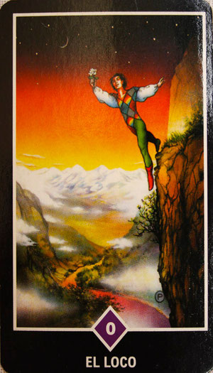
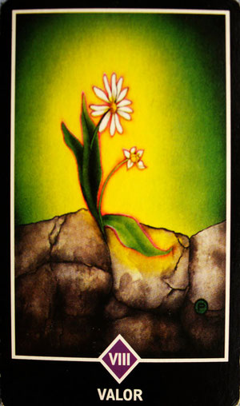
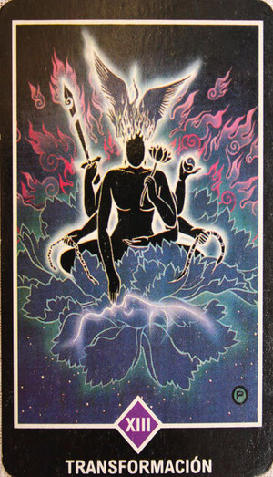
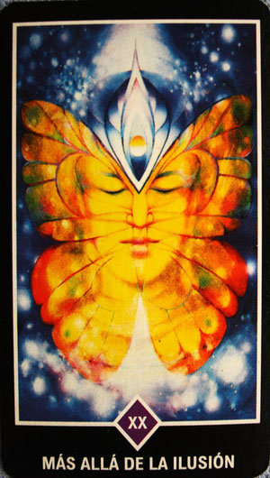
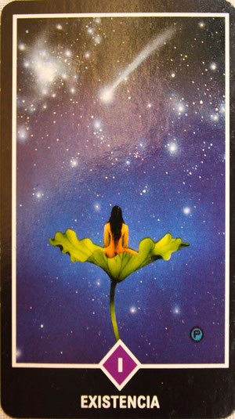
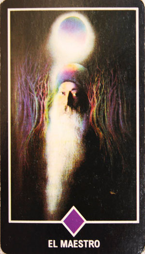

| IMAGEN |
DESCRIPCION |
|  |
Un loco es aquel que continúa confiando; un loco es alguien que continùa confiando en contra de toda su experiencia. Tú lo engañas y él confía en ti; y lo vuelves a engañar, y él confia en ti; y lo vuelves a engañar y él confia en ti. Entonces dirás que es un loco, que no aprende. Su confianza es tremenda; su confianza es tan pura que nadie puede corromperla. Sé un loco en el sentido taoísta, en el sentido zen. No trates de crear un muro de conocimientos a tu alrededor. Deja que suceda cualquier experiencia que se te presente, y despuès abandónala, deshazte de ella. Ve limpiando tu mente continuamente; ve muriendo al pasado, así permanecerás en el presente, aquí y ahora, como si acabases de nacer, como si hubieras nacido ahora mismo, como un bebé. Al principio va a ser muy difícil. El mundo se aprovechará de ti... Déjalos. Son una pobre gente. Incluso si te engañan, te decepcionan y te roban..., deja que suceda, porque aquello que es verdaderamente tuyo no se te puede robar; aquello que es verdaderamente tuyo no se te puede quitar y , cada vez que no dejes que las situaciones te corrompan, esa oportunidad se convertirá en una integraciòn interior. Tu alma ganará con ello. |
|  |
La semilla no puede saber lo que va a pasar: nunca ha conocido a la flor y ni siquiera puede creer que contiene el potencial de transformarse en algo semejante, en una hermosa flor. El viaje es largo, y siempre resulta más seguro no emprenderlo porque el camino es desconocido, nada está garantizado. Mil y uno son los riesgos del trayecto, muchas son las trampas; y la semilla está segura, escondida dentro de su dura coraza. Pero la semilla lo intenta, hace un esfuerzo: se deshace de la protectora cáscara, que es su seguridad, y empieza a moverse. Inmediatamente comienza la batalla: la lucha contra el suelo, las piedras, las rocas. La semilla era muy dura pero el brote será muy, muy blando, y los peligros serán muchos. No había peligro para la semilla; hubiera podido sobrevivir durante milenios. Sin embargo, para el brote existen innumerables peligros: brota hacia lo desconocido, hacia el sol, hacia la fuente de luz, sin saber dónde, sin saber por qué. La cruz que ha de ser transportada es grande, pero la semilla está dominada por un sueño y, entonces, se mueve. Lo mismo es el camino para el hombre. Es arduo y requerirá mucho valor. |
|  |
Un maestro zen no es simplemente un profesor. En todas las religiones sólo hay profesores: te enseñan cosas que tú no sabes, pero te piden que creas porque no hay forma de traer estas experiencias a la realidad objetiva. El profesor tampoco las ha conocido: tan sólo las ha creido, y lo que hace es trasferir esta creencia a otro. El zen no es el mundo del creyente, no es para los que tienen fe. Es para aquellas almas atrevidas que pueden despojarse de todas las creencias o no creencias, las dudas, la razón, la mente, y entrar simplemente en su pura existencia sin límites.
Esto conlleva una formidable transformación. Por tanto, permíteme decir que mientras otras religiones están interesadas en las filosofías, el zen se ocupa de la metamorfosis, de la transformación. Es una alquimia auténtica: te transforma de simple metal a oro; pero tienes que entender su lenguaje no con la razón ni la mente intelectual, sino con tu corazón amoroso, o incluso sólo escuchando, sin que te importe si es verdad o no; y llegará un momento en el que de repente lo ves, ves aquello que te ha estado esquivando durante toda la vida. De repente, aquello que Buda llamó "las ochenta mil cuatro puertas" se abren.
|
|  |
Esta es la única distinción entre el sueño y lo real: la realidad te permite dudar, el sueñono... Para mí la capacidad de duda es una de las grandes bendiciones de la humanidad. Las religiones se han convertido en enemigas porque han estado cercenando las mismísimas raíces de la duda. Hayu una razón de por qué han hecho esto: porque quieren que la gente crea en ciertas ilusiones que han predicado... ¿ Por qué personas como Gautama el Buda han insistido tanto en que toda la existencia - excepto tu ser observador, escepto tu consciencia - simplemente es efímera, hecha del mismo material del que están hechos los sueños ? No están diciendo que estos árboles no estpabn aquí, no están diciendo que esos pilares no están allí. No lo malinterpretes a causa de la palabra "ilusión"... Aunque se haya traducido así, no es la palabra correcta, porque la ilusión no existe: existe la realidad. Maya está precisamente en el medio: casi existe. En cuanto a las actividades cotidianas, pueden tomarse como una realidad, pero sólo en el sentimiento esencial, desde la cumbre de tu iluminación, esa realidad se vuelve irreal, ilusoria. |
|  |
Tú no eres accidental: la existencia te necesita. Sin ti faltará algo en la existencia que nadie puede reemplazar. Esto es lo que te da dignidad: toda la existencia te extrañará. Las estrellas, el sol, la liuna, los árboles y los pájaros y la tierra..., todo el Universo sentirá que hay un pequeño lugar vacío que nadie puede llenar excepto tú. Esto te proporciona un tremendo gozo, la plenitud de que estás relacionado con la existencia y que ésta te cuida. Una vez que estés limpio y claro, puedes ver el tremendo amor que desciende sobre ti desde todas las dimensiones. |
|  |
Los maestros no enseñan la verdad. No hay forma de enseñarla. Es una transmisión más allá de las escrituras, más allá de las palabras. Es una transmisión. Es energía provocando energía en ti. Es un tipo de sincronicidad...
Tienes que acercarte al maestro con mucho amor, con mucha confianza, con el corazón abierto. Tú no eres consciente de quién eres, pero él sí lo es acerca de sí mismo... y de ti. Podría decirse que la oruga no es consciente de que puede transformarse en mariposa. Vosotros sois orugas: bodhisattvas. Todas las orguas son bodhisattvas y todos los bodhisattavas son orugas. Un bodhisattava es alguien que puede convertirse en una mariposa, alguien que puede convertirse en un buda; es una semilla de buda, un buda en esencia... La relación entre maestro y discípulo es la que hay entre una oruga y una mariposa: una amistad mutua. La mariposa no puede probar que la orgua es capaz de convertirse en mariposa; no hay manera lógica. Pero la mariposa puede provocar un anhelo en la oruga de que es posible. |